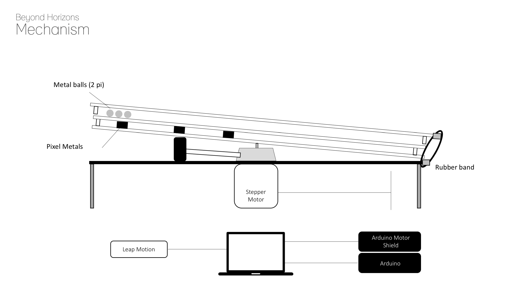

Concept
Beyond Horizons is an conceptual disk-shaped clock that was aimed to give users a moment of meditative experience.
The thin disk displays the current time with small metal balls pulled by array of magnets attached on the bottom layer of the disk plate.
While slowly spinning on the surface, the metal balls somtimes wash away part of the displayed numbers or group together with beautiful sound.
The current prototype is made to propose a concept to the clock design and the clock should be improved to display numbers automatically using electromagnetic circuits.
Designing Process : Mechanisms
The biggest challenge of this clock was to make a thin, sleek disk spinning beautifully with the simplest mechanism on the closest distance from the surface.
Tilting approximately 5 degree from the surface showed the most aesthetic outcome after serveral trials from the primitive experiment.
Following sketch suggests several possible types of mechanisms and its required components. Both 3D printer and laser cutting with acrylic board were also actively utilized throughout the design process.
After numbers of trial and error, following mechanism was fixed to be the final design.

I put the disk only sustained with the top spinning part of the motor which gives the display freedom of movement in any direction only having an axis anchored.
To prevent the disk(display) to spin around along with the motor axis, I connected one part of the disk with the rubber band that loosely holds the disk part that also enabled the disk to move up and down, achieving perfect wobbling motion.
To make the clock interact with users, I attached leap motion sensor to the prototype and made it respond to users’ hand gestures.
When the user draws a circle in a clockwise direction, the clock changes its direction and follow users’ direction. Processing was used to connect leap motion sensor and Arduino.
3D Modeling
Inventor 2015 was used to simulate mechanisms. The spinning part attached to the stepper motor is exported to print with 3D printers.
Future Works
The biggest limitation of this design was that it was just a conceptual image, not a real clock that displays the real-time information. For the future work, I would spend time to make the clock automatic with electromagnetics that generates magnetic force only for short period of time.